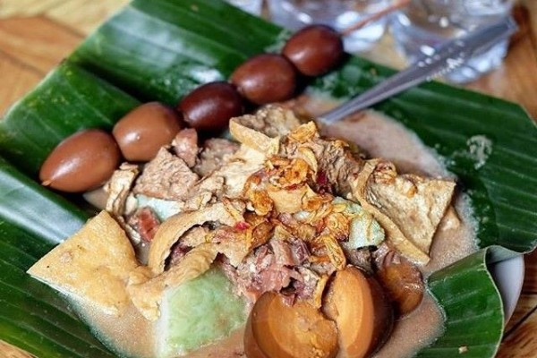
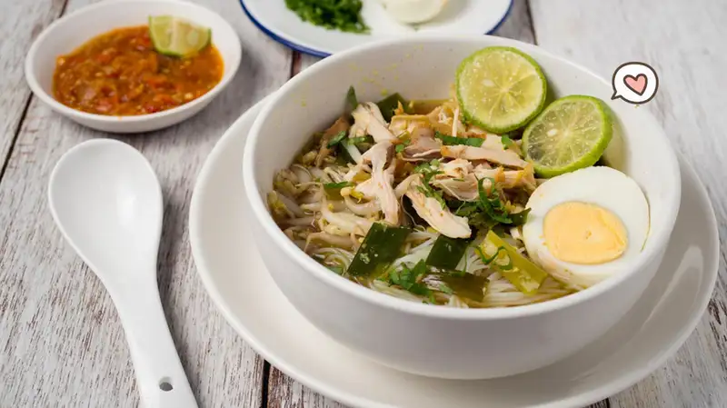
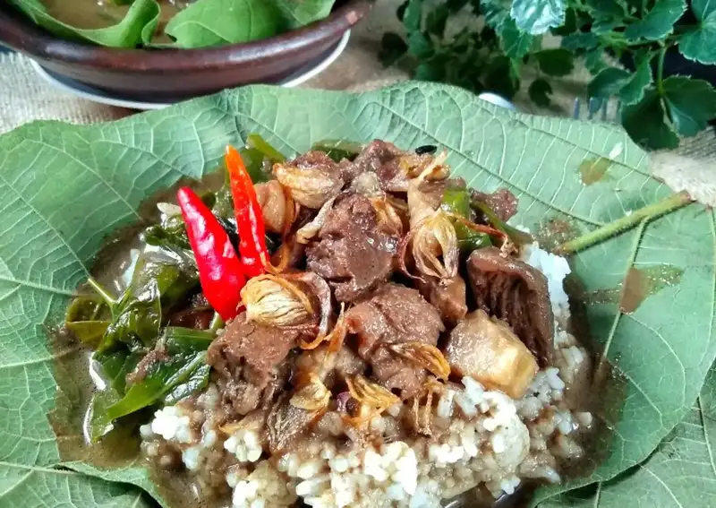
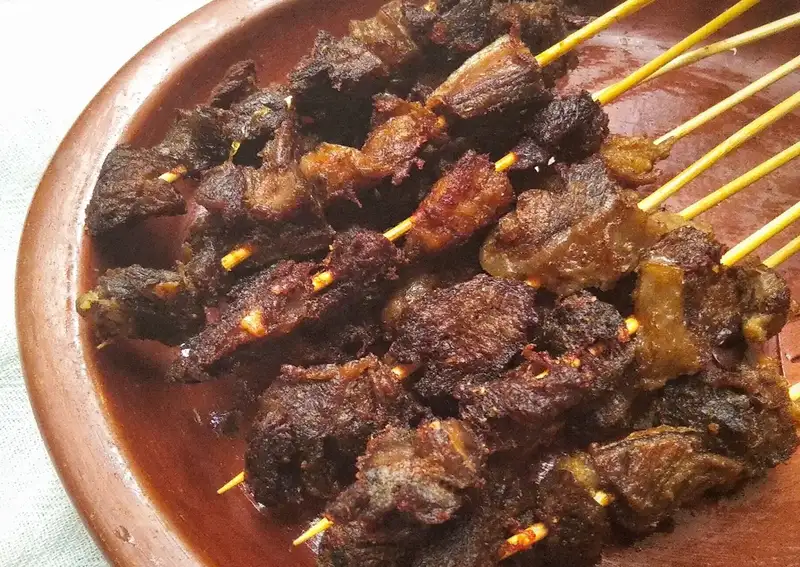
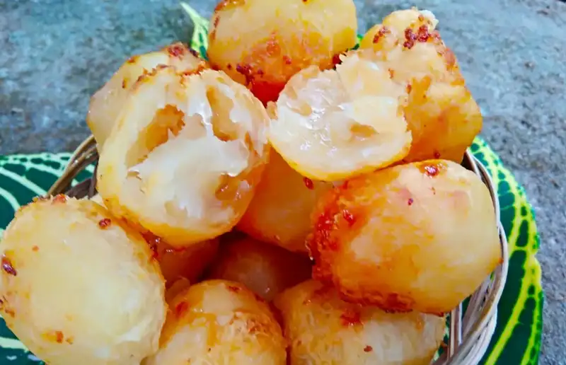

Konten wisata
Pernahkah kalian pergi berlibur ke beragam tempat wisata di Kudus? Kudus Menjadi salah satu kota yang letaknya berada di Jawa Tengah, kota ini dikenal sebagai kota yang menjadi destinasi wisata religi. Terdapat banyak makam dari orang-orang ternama yang telah berhasil menyebarkan agama Islam di Pulau Jawa, salah satunya adalah Sunan Kalijaga. Selain wisata religi, di kota ini banyak destinasi wisata alam yang memiliki pemandangan indah dan keunikan tersendiri.


Konten Makanan
Kuliner khas Kudus memiliki keunikan tersendiri yang mencerminkan tradisi dan budaya masyarakatnya yang kaya. Dari berbagai hidangan tradisional hingga jajanan khas, setiap sajian di Kudus memiliki cerita dan rasa yang tak terlupakan. Pengaruh budaya Jawa dan Arab yang pernah berkembang di kota ini memberikan warna tersendiri dalam setiap masakan dan makanan ringan yang ditawarkan. Jika Anda berkunjung ke Kudus, jangan lewatkan untuk menjelajah ragam kuliner khasnya yang akan memanjakan lidah dengan cita rasa autentik dan berbeda dari lainnya.
    